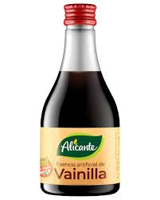

Instrucciones:
- Precalienta el horno a 180°C.
- En una sartén, mezcla el azúcar y el agua. Cocina a fuego medio hasta que el azúcar se disuelva y tome un color dorado. Vierte el caramelo en un molde para flan, cubriendo el fondo y los lados. Deja enfriar.
- En un tazón grande, mezcla la leche condensada, la leche evaporada, los huevos y la esencia de vainilla hasta obtener una mezcla homogénea.
- Vierte la mezcla sobre el caramelo en el molde para flan.
- Cubre el molde con papel aluminio y colócalo en una bandeja para hornear. Llena la bandeja con agua caliente hasta llegar a la mitad del molde para flan (baño María).
- Hornea durante aproximadamente 50-60 minutos o hasta que al insertar un cuchillo en el centro, este salga limpio.
- Retira del horno y deja enfriar a temperatura ambiente. Luego refrigera por al menos 4 horas o toda la noche.
- Para desmoldar, pasa un cuchillo por los bordes del flan y voltéalo sobre un plato.
- ¡Disfruta tu delicioso flan napolitano!